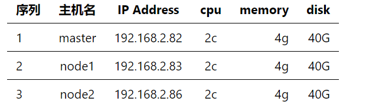
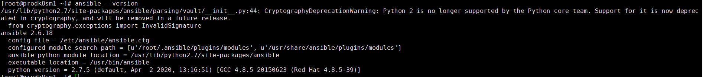
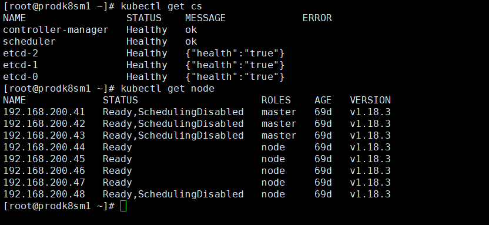

通过文档指导搭建出一套生产可用k8s集群
采用github上一个基于ansible编写的开源小工具进行搭建,工具支持多master部署
部署模式为二进制部署包
部署工具参考文档

# 文档中脚本默认均以root用户执行
yum update
# 安装python
yum install python -y
vim /etc/hosts
内容如下：
192.168.2.82 master
192.168.2.83 node1
192.168.2.86 node12
# 在master节点
ssh-keygen #一路回车就行
ssh-copy-id master -p 22
ssh-copy-id node1 -p 22
ssh-copy-id node2 -p 22
yum install git python-pip -y
# pip安装ansible(国内如果安装太慢可以直接用pip阿里云加速)
pip install pip --upgrade -i https://mirrors.aliyun.com/pypi/simple/
pip install ansible==2.6.18 netaddr==0.7.19 -i https://mirrors.aliyun.com/pypi/simple/
安装成功截图

# 下载工具脚本easzup，举例使用kubeasz版本2.0.2
export release=2.0.2
curl -C- -fLO --retry 3 https://github.com/easzlab/kubeasz/releases/download/${release}/easzup
chmod +x ./easzup
# 使用工具脚本下载
./easzup -D
cd /etc/ansible && cp example/hosts.multi-node hosts, 然后实际情况修改此hosts文件
# 分步安装
ansible-playbook 01.prepare.yml
ansible-playbook 02.etcd.yml
ansible-playbook 03.docker.yml
ansible-playbook 04.kube-master.yml
ansible-playbook 05.kube-node.yml
ansible-playbook 06.network.yml
ansible-playbook 07.cluster-addon.yml
#ansible-playbook 90.setup.yml
